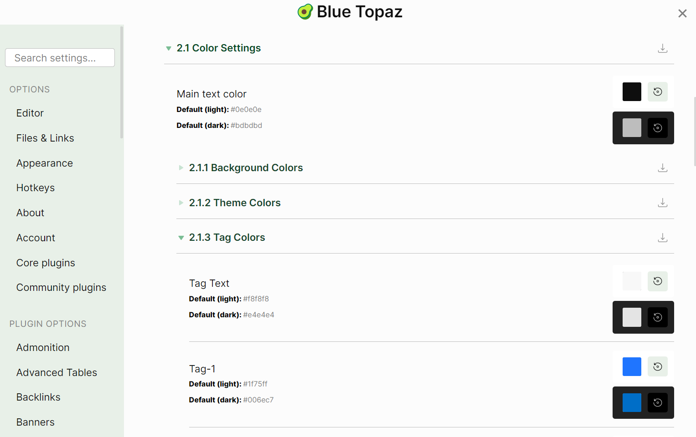

This is a Demo Vault of Blue Topaz Theme which you are currently in using the right one of Obsidian Themes, you can always get the latest updates of the vault from the Obsidian Community Themes and/or the Link Here
Here shows the most attractive features of Bule Topaz and how to make that happens in your Obsidian notes. Hope you will enjoy and like it.
Style Setting and enhanced Admonition come with the Blue Topaz, you can find certain custom settings there and easily to fine tune the Blue Topaz to your own tasts, also, you will probably find the enhanced Admonition Plugin’s features are more delighted.
You may also find some other Obsidian Plugins come with this theme, which help the theme works well.
It is difficult to guess how widely will this theme spread out, so if you happen to know well the QQ 🐧, then you may find us at 908688452.
You can also find us at github 😊
Finally, thanks to all fellows in the community of Topaz, without you, there will be no Blue Topaz theme.
This theme, is dedicated to you all. Thanks for all of your loves to this theme.
In your notes, you probably want to emphasize or decorate some of your texts. You can simply replace ==your texts== below and you will see what happens.
Read and try, if you are first come here, make a copy of this to a new note, so you can always be back here again!
While you are in the ==Source Mode replace your texts between the ** * **== below,
*your texts(replace it here, switch to Source Mode, you may have trouble to find me here😊)*
Do this in ==Source Mode or Live Preview mode, please be reminded, if you are with Live Preview== mode, the first * and the last * is disappeared.
Switch back and forth within the 3 modes, (==Reading, Source Mode, Live Preview==) to see the differences, get familiar with this will make your notes taking a piece of cake!
Then you will get something like this in ==Reading mode or Live Preview== mode
Type any words here to replace these text between the first * and the last * . Do not leave any blank after the first *. in ==Reading== mode, you only see text without any markdown marks, including the first and the last *.
Amazing! You got it!
You can also try to begin type double ==** * and followed your text and then ended with same double * == , like ** your text**. It will show up in == Reading **== mode like this:
your texts
You can also play with ==What you typed: (combinations of some ** = and * **== , and so on)
What you got
What you typed
your words
your words
==your words==
*your words*
your words
*your words*
==your words==
**your words**
==your words==
***your words***
your words
**your words**
your words
***your words***
Read above table only in == Reading== mode. 😁
Please ignore the appearances varies while you play with above combinations of ==** = and * ** while you are typing, you will see the magics when you switch to Reading or Live Preview== mode.
Please do not input the ** "\" ** while you are typing, though you can surely see it in the ==Source mode==!
You man probably noticed that double ** ”==” ** will highlight your texts.
title: Want to custmize your highlight colors？It is pice of cake!collapse: trueSave the below css snippet codes with any filename you would like to use, and put it in .obsidian\snippets in your vault, then enable it, it will be actived. Need more readings?[How to use CSS snippt](obsidian://open?vault=Obsidian%20Help&file=%E4%BD%BF%E7%94%A8%E6%8C%87%E5%8D%97%2F%E6%B7%BB%E5%8A%A0%E8%87%AA%E5%AE%9A%E4%B9%89%E4%B8%BB%E9%A2%98)```css/* Make more customized hightlight colorscolorful highlights 1 _==foobar==_ colorful highlights 2 __==foobar==__*/.markdown-preview-view em > mark, span.cm-em.cm-highlight { background-color: rgb(255, 248, 152);}span.cm-strong.cm-highlight, .markdown-preview-view strong > mark { background-color: rgb(147, 255, 228);/* Change the values inside parenthesis(value from 0 to 255), the color will change accordingly. */ /* cuman,能不能将这里也放一个可以调色的小方块，在VS Code中那样，点击拖动就可以调整颜色？*/}```
Although playing with these combinations will make your note taking more colorful and fun, it is advised to **DO NOT** use them abusely.Gaving some meanings to certain colors and fonts, using them in your notes, will make your notes more tidy and neat.**Fianlly, Do add **==cssclass: colorful-highlight==** into the **==YAML==** of your notes, if you like colorful note-taking** #important
There are nine colors of tags within the ==Blue Topaz==, all of them are listed as in the first line below. The color of tags will vary in accordingly with its positions, no matter of the contents of the tags.
You can customize the colors in ==Style Settings, 2.1.3 Tag Color== if you prefer some other colors of tags.

There also some specific tags for ==*ideas*==, ==*important*==, ==*dailynote*==, ==*weeklynote*==,==*questions*==,==*completed*==, ==*inprogress*== , using these tags by adding a ==*\#*== before these words will make your tags special.
For example , if you type: ==ideas==, you will get the tagideas .
title: Example of A CSS Snippet Example of Customized #noideasYou may replace the "noideas" with "your words" and the icons to make your own `#your words` tag.```.tag[href^="#noideas"] { background-color: var(--tag-noideas-bg) !important; font-weight: 600; font-family: var(--font-family-special-tag) !important; color: var(--white) !important; border: none;}.tag[href^="#noideas"]::after { content: ' 😊❓'; font-size: var(--font-size-emoji-after-tag);}.cm-s-obsidian .CodeMirror-line span.cm-tag-noideas:not(.cm-formatting-hashtag)::after { content: ' 😊❓';}.cm-s-obsidian .==**CodeMirror-line**== span.cm-hashtag.cm-meta.cm-hashtag-end.cm-tag-noideas:not(.cm-formatting-hashtag) { font-family: var(--font-family-special-tag) !important; font-weight: 600; background-color: var(--tag-noideas-bg); color: var(--white) !important; border: none;}/* end *//* 我看Tips里说CodeMirror插件会和Blue Topaz有冲突，这里的代码里还有它，是从0502的示例库抄来的代码 *//* below is copied by myself from Blue Topaz CSS but not background color, realy noideas 😒, aslo, if possible, the tag fonts should also be able to be customized with this css snippet, but currently, I do not know how to make it happens! */.tag[href^="#noideas"] { background-color: var(--tag-noideas-bg) !important; font-weight: 600; font-family: var(--font-family-special-tag) !important; color: var(--white) !important; border: none;}.tag[href^="#noideas"]::after { content: ' 😊💡'; font-size: var(--font-size-emoji-after-tag);}.cm-s-obsidian:not([class="markdown-source-view cm-s-obsidian mod-cm6"]) span.cm-tag-noideas:not(.cm-formatting-hashtag)::after { content: ' 😊💡';}.cm-s-obsidian:not([class="markdown-source-view cm-s-obsidian mod-cm6"]) span.cm-hashtag.cm-meta.cm-hashtag-end.cm-tag-noideas:not(.cm-formatting-hashtag) { background-color: var(--tag-noideas-bg); font-family: var(--font-family-special-tag) !important; font-weight: 600; color: var(--white) !important; border: none; font-size: 0.95em;}```
Please note that above CSS snippet is only tested with `Blue Topaz` theme, use it with other Obsidian themes **maybe** or **maynot** be working well.
Please reading [How to use tags with your notes with Obsidian](obsidian://open?vault=Obsidian%20Help&file=%E4%BD%BF%E7%94%A8%E6%8C%87%E5%8D%97%2F%E6%A0%87%E7%AD%BE%E7%9A%84%E4%BD%BF%E7%94%A8) for detailed usage of tags.
Adopted partial codes from Notation theme @deathau
Put：==*note-ColorName-bg*== or ==*note-ColorName-background*== in your text, that is all😊，choise whatever you prefer. Where the **ColorName** can be:Orange, yellow, green, blue, purple, pink, red, gray, and brown.
title: Take **`orange`** as an example:If your put code block as below in ==***Source Mode***==````md```note-orange-bgtext```````Then in ==***Live Preview***== and ==***Reading***== mode, it should looking like below```note-orange-bgtext```
Put：==*note-ColorName*== in your text, that is all😊. Where the **ColorName** can be:Orange, yellow, green, blue, purple, pink, red, gray, and brown.
In ==Live Preview and Reading== mode, it should looking like below (Take orange as an example):
```note-orangeThis text color is orange.```It shows below:
title: Example of Orange Color of Text```note-orangeThis text color is orange.
Here comes the others Examples
title: Example of Colorized Texts```note-orangeThis text color is orange.``````note-yellowThis text color is yellow.``````note-greenThis text color is green.``````note-blueThis text color is blue.``````note-purpleThis text color is purple.``````note-pinkThis text color is pink.``````note-redThis text color is red.``````note-grayThis text color is gray.``````note-brownThis text color is brown.```
In ==Blue Topaz== theme, there are three colorful highlights *==Text here==*, **==text here==**, and ***==text here==***
Appearances
What you put in your text
Hello World
*Hello World*
Hello World
**Hello World**
Hello World
***Hello World***
You can fine tune the color of background, color of fonts, and/or make it enable or disable it in **style settings 2.1.4**
Even if you disabled the colorful highlights in the **Style Settings 2.1.4**, you can still make it active in your very specific note by adding `cssclass: colorful-highlight` into the notes YAML
Please keep in mind, in ==**Live Preview**== mode, it **DOES NOT** tell the difference of order of codes `"*==Text Here==*"` from `"==*Text Here*=="`. However, it will be distingushed in ==**Reading**== mode, so, only text begin with a **\* ** shall be rendered as colorful highlight text.
title: Long press mouse button##### To show hidden text, use codes below:```````note-clozeThis is hidden a hiding message ```````<center> ❤️❤️❤️ </center>##### Press any of your mouse button above the black bar```note-cloze*This is hidden message!* Hiden text only support plain text, no emoji support. ```
title: Hover mouse##### To show hidden texts, use codes below:```````hiboxWhen mouse hovered here, text shows up.```````##### Hover your mouse a little below, see what happens````ad-blank```ad-hibox- [ ] You just **hovered** your mouse on me.😁😁😁````
You may also get this resaults with **admonition** plugin by enable it in **Style Settings**. as well as conresspondingly settings set up.
Three type of hidden/blacken-out and show text
Mouse Hover to show blacken-out hidden text
(Use highlight marks ”==” ** + ** deleting marks ”~~ ” to set-up Mouse Hover to show blacken-out hidden text)
Example: ~~blacken-out hidden text waiting mouse hover on it to show-up~~
title: Example: **\=\=\~\~blacken-out hidden text waiting mouse hover on it to show-up\~\~\=\=**```##### A Tranquil Night [Tang Dynisty] Li Bai, Translated by: Xu Yuan ChongBefore my bed a pool of light,Is it hoarfrost upon the ==~~ground?~~==Eyes raised, I see the moon so bright;Head bent, in homesickness I'm ==~~drowned.~~==```<center>❤️❤️ *I am a devide line, below you can find out hiding text by **Hover Your Mouse** on It* ❤️❤️</center>---<center><h4> A Tranquil Night</h4><h5>[Tang Dynisty] Li Bai</h5> Translated by: Xu Yuan ChongBefore my bed a pool of light,Is it hoarfrost upon the ==~~ground?~~==Eyes raised, I see the moon so bright;Head bent, in homesickness I'm ==~~drowned.~~==</center>
Press any of Mouse button to show hidden text
(Use italic mark ”*” ** + ** highlight marks ”==” ** + ** deleting marks ”~~ ” to set-up Press any of mouse button to show hidden text)
Example: ***~~\hidden text waiting mouse button be pressed to show-up~~* **
title: Example: **\*\=\=\~\~\hidden text waiting mouse button be pressed to show-up\~\~\=\=\* **```##### A Tranquil Night [Tang Dynisty] Li Bai, Translated by: Xu Yuan ChongBefore my bed a pool of light,Is it hoarfrost upon the *==~~ground?~~==*Eyes raised, I see the moon so bright;Head bent, in homesickness I'm *==~~drwoned.~~==*```<center>❤️❤️ *I am a devide line, below you can find out hiding text by **Press Your Mouse** on It* ❤️❤️<h4>A Tranquil Night</h4><h5>[Tang Dynisty] Li Bai</h5>Translated by: Xu Yuan ChongBefore my bed a pool of light,Is it hoarfrost upon the *==~~ground?~~==*Eyes raised, I see the moon so bright;Head bent, in homesickness I'm *==~~drwoned.~~==*</center>
Mouse Hover to show hidden text
(Use italic marks ”*” ** + ** deleting marks ”~~ ” to set-up Mouse Hover to show hidden text)
Example: ***~~\hidden text waiting mouse hover on it to show-up~~* **
title: Example **\*\~\~\hidden text waiting mouse hover on it to show-up\~\~\* **```##### A Tranquil Night [Tang Dynisty] Li Bai, Translated by: Xu Yuan ChongBefore my bed a pool of light,Is it hoarfrost upon the *~~ground?~~*Eyes raised, I see the moon so bright;Head bent, in homesickness I'm *~~drowned.~~*```<center>❤️❤️ *I am a devide line, below you can find out hiding text by **Hover Your Mouse** on It* ❤️❤️<h4>A Tranquil Night</h4><h5>[Tang Dynisty] Li Bai</h5> Translated by: Xu Yuan ChongBefore my bed a pool of light,Is it hoarfrost upon the *~~ground?~~*Eyes raised, I see the moon so bright;Head bent, in homesickness I'm *~~drowned.~~*</center>
All above three types of hide-and-show is enabled by default of ==Blue Topaz==, you can disable it in Style Settings 2.3.10, as well as find how to fine tune the appearances of hide-and-show.
You can use the hide-and-show in your very specific note by adding cssclass: cloze into the YAML of the note, even if you disabled it in Style Settings 2.3.10.
, the | to separate your ImageFileName , and the R will right aligment your image.
Example: Right alignment of the image with ![[obsidian_image.png|R]] you have,
Example: Left alignment of the image ![[obsidian_image.png|L]] you have,
Sizing Your Images While Left and Right Alignment
Above examples do not show too many differences, that’s because the images are too big. Let’s make it smaller by
simple adding ==|DigitalNumber== after your ImageFileName and left or right command 😊, like
, the | to separate your ImageFileName , Left or Right , while the number 120 is the size of the image. If you have no ideas what the size is of the image, try 2 or 3 times, you will get it.😊
![[obsidian_image.png|R|120]] as an example,
![[obsidian_image.png|L|120]] as another example,
left/Left/LEFT/L
right/Right/RIGHT/R
Using  to Embed Images to Notes
As for the images been embedded in notes with  can also be manipulated in the same way above described. Splitting the pane left-and-right if the images are not shown up immediately, then it will show well. (This is due to Obsidian’s limitation)
Zoon in and Out
This shows the zooming apperences of embedded image with 
Left or Right Alignment
Examples of left or right alignment with  embedded images:
All these writings right/Right/RIGHT/R and left/Left/LEFT/L will do as your expecting. 😊

The Blue Topaz theme of Obsidian is the best theme of mime, I believe.The Blue Topaz theme of Obsidian is the best theme of mime, I believe.The Blue Topaz theme of Obsidian is the best theme of mine, I believe.The Blue Topaz theme of Obsidian is the best theme of mime, I believe.The Blue Topaz theme of Obsidian is the best theme of mime, I believe.
Images Inline Left and Right Alignment
With codes like inlineR/InlineR/INLINER/inlR (for right aligment) and inlineL/InlineL/INLINEL/inlL (for left alignment) will insert the images in lines in your notes.
**The Blue Topaz theme of Obsidian is the best theme of mime, I believe.** *The Blue Topaz theme of Obsidian is the best theme of mime, I believe.* **==The Blue Topaz theme of Obsidian is the best theme of mine, I believe.==** *==The Blue Topaz theme of Obsidian is the best theme of mime, I believe.==* ***==The Blue Topaz theme of Obsidian is the best theme of mime, I believe.==*** ***==The Blue Topaz theme of Obsidian is the best theme of mime, I believe.==*** **The Blue Topaz theme of Obsidian is the best theme of mime, I believe.** *The Blue Topaz theme of Obsidian is the best theme of mime, I believe.* **==The Blue Topaz theme of Obsidian is the best theme of mine, I believe.==** *==The Blue Topaz theme of Obsidian is the best theme of mime, I believe.==* ***==The Blue Topaz theme of Obsidian is the best theme of mime, I believe.==***
Images Aside Inline with varied Size
With codes like inl|ImageSize will insert the images with varied size in lines in your notes.
Code shall look like this :  or  where the 50 indicates the size of the images, it can be varied. (Oh, forgot to mention it, it is in pixels 😊)
 I love the Blue Topaz!Blue Topaz ❤️❤️The Blue Topaz❤️❤️ ❤️❤️❤️I ❤️ Blue Topaz!**The Blue Topaz theme of Obsidian is the best theme of mime, I believe.** *The Blue Topaz theme of Obsidian is the best theme of mime, I believe.* **==The Blue Topaz theme of Obsidian is the best theme of mine, I believe.==** *==The Blue Topaz theme of Obsidian is the best theme of mime, I believe.==* ***==The Blue Topaz theme of Obsidian is the best theme of mime, I believe.==***
The Blue Topaz theme of Obsidian is the best theme of mime, I believe.The Blue Topaz theme of Obsidian is the best theme of mime, I believe.
** Here is the  code.** , Please pay attention to the image only.
The Blue Topaz theme of Obsidian is the best theme of mime, I believe.The Blue Topaz theme of Obsidian is the best theme of mime, I believe.The Blue Topaz theme of Obsidian is the best theme of mime, I believe.The Blue Topaz theme of Obsidian is the best theme of mime, I believe.The Blue Topaz theme of Obsidian is the best theme of mime, I believe.The Blue Topaz theme of Obsidian is the best theme of mime, I believe.The Blue Topaz theme of Obsidian is the best theme of mime, I believe. The Blue Topaz theme of Obsidian is the best theme of mime, I believe.The Blue Topaz theme of Obsidian is the best theme of mime, I believe.The Blue Topaz theme of Obsidian is the best theme of mime, I believe.
More Examples
title: Exapmle of `inlineL`/`InlineL`/`INLINEL`/`inlL`Here comes more examples!Here comes more examples! Here comes more examples! Here comes more examples! Here comes more examples!Here comes more examples! Here comes more examples!Here comes more examples! Here comes more examples!![[obsidian_image.png|inlL|100]] Here comes more examples! Here comes more examples!Here comes more examples! Here comes more examples! Here comes more examples! Here comes more examples!Here comes more examples! Here comes more examples!Here comes more examples! Here comes more examples!Here comes more examples! Here comes more examples!Here comes more examples! Here comes more examples!Here comes more examples! Here comes more examples!Here comes more examples! Here comes more examples! Here comes more examples!Here comes more examples! Here comes more examples! Here comes more examples! Here comes more examples!Here comes more examples! Here comes more examples!
title: Exapmle of `inlineR`/`InlineR`/`INLINER`/`inlR`Here comes more examples!Here comes more examples! Here comes more examples! Here comes more examples! Here comes more examples!Here comes more examples! Here comes more examples! Here comes more examples! Here comes more examples!! ![[obsidian_image.png|inlR|100]] Here comes more examples! Here comes more examples!Here comes more examples! Here comes more examples! Here comes more examples! Here comes more examples!Here comes more examples! Here comes more examples! Here comes more examples! Here comes more examples!Here comes more examples! Here comes more examples!Here comes more examples! Here comes more examples!Here comes more examples! Here comes more examples!Here comes more examples! Here comes more examples! Here comes more examples!Here comes more examples! Here comes more examples!Here comes more examples! Here comes more examples!Here comes more examples! Here comes more examples!
title: Exapmle of `inline`/`Inline`/`INLINE`/`inl`Here comes more examples! Here comes more examples! Here comes more examples! Here comes more examples!Here comes more examples! Here comes more examples! Here comes more examples! Here comes more examples!Here comes more examples! Here comes more examples! Here comes more examples!![[obsidian_image.png|inl|100]] Here comes more examples!Here comes more examples! Here comes more examples!Here comes more examples! Here comes more examples! Here comes more examples! Here comes more examples! Here comes more examples! Here comes more examples! Here comes more examples!Here comes more examples! Here comes more examples! Here comes more examples! Here comes more examples!Here comes more examples! Here comes more examples!
When `inlR/inlL` and `inl` are used, its **positions** inline will have some sutle influnces to the resaults. See below examples. For `inlR` and `inlL`，the image will aglin with the top of the line where it is in, while for `inl`, the image will aglin with the bottom of the line.
title: Example of `inlL``![[obsidian_image.png|inlL|100]]`Here comes more examples! Here comes more examples! Here comes more examples! Here comes more examples! Here comes more examples! Here comes more examples! Here comes more examples! Here comes more examples! Here comes more examples! Here comes more examples! Here comes more examples! Here comes more examples! Here comes more examples! Here comes more examples!❤️❤️❤️❤️❤️❤️❤️❤️❤️❤️❤️❤️❤️❤️❤️❤️❤️❤️❤️❤️❤️❤️❤️❤️❤️❤️❤️❤️ ![[obsidian_image.png|inlL|100]]😊😊😊😊😊😊😊😊😊😊😊😊Here comes more examples! Here comes more examples! Here comes more examples! Here comes more examples! Here comes more examples! Here comes more examples! Here comes more examples! Here comes more examples! Here comes more examples! Here comes more examples! Here comes more examples! Here comes more examples! Here comes more examples! Here comes more examples!
title: Example of `inlR``![[obsidian_image.png|inlR|100]]`Here comes more examples! Here comes more examples! Here comes more examples! Here comes more examples! Here comes more examples! Here comes more examples! Here comes more examples! Here comes more examples! Here comes more examples! Here comes more examples! Here comes more examples! Here comes more examples! Here comes more examples! Here comes more examples!❤️❤️❤️❤️❤️❤️❤️❤️❤️❤️❤️❤️❤️❤️❤️❤️❤️❤️❤️❤️❤️❤️❤️❤️❤️❤️❤️❤️ ![[obsidian_image.png|inlR|100]] 😊😊😊😊😊😊😊😊😊😊😊😊Here comes more examples!Here comes more examples! Here comes more examples! Here comes more examples! Here comes more examples!Here comes more examples! Here comes more examples! Here comes more examples!Here comes more examples! Here comes more examples! Here comes more examples! Here comes more examples!Here comes more examples! Here comes more examples!
title: Example of `inline``![[obsidian_image.png|inline|100]]` Here comes more examples! Here comes more examples! Here comes more examples! Here comes more examples! Here comes more examples! Here comes more examples! Here comes more examples! Here comes more examples! Here comes more examples! Here comes more examples! Here comes more examples! Here comes more examples! Here comes more examples! Here comes more examples!❤️❤️❤️❤️❤️❤️❤️❤️❤️❤️❤️❤️❤️❤️❤️ ![[obsidian_image.png|inline|100]] 😊😊😊😊😊😊😊😊😊😊😊😊Here comes more examples! Here comes more examples! Here comes more examples! Here comes more examples! Here comes more examples! Here comes more examples! Here comes more examples! Here comes more examples! Here comes more examples! Here comes more examples! Here comes more examples! Here comes more examples!Here comes more examples! Here comes more examples!
Title of Images
Adopted from Obsidian Themes of Discordian and Orange by @radekkozak and @echoxu
Put #centre / #center,#right or #left after ImageFileName, like ![[xxx.png#position|captions|size]]
Egg or not? Egg? Yes! No! Egg? No! Yes! Egg? Yes, It is an egg! No, it is NOT an egg! Egg? Yes, It is an egg! It is a GOOD egg! No, it is NOT an egg! It is 😒😒😒！Egg or not? Egg? Yes! No! Egg? No! Yes! Egg? Yes, It is an egg! No, it is NOT an egg! Egg? Yes, It is an egg! It is a GOOD egg! No, it is NOT an egg! It is 😒😒😒！Egg or not? Egg? Yes! No! Egg? No! Yes! Egg? Yes, It is an egg! No, it is NOT an egg! Egg? Yes, It is an egg! It is a GOOD egg! No, it is NOT an egg! It is 😒😒😒！Egg or not? Egg? Yes! No! Egg? No! Yes! Egg? Yes, It is an egg! No, it is NOT an egg! Egg? Yes, It is an egg! It is a GOOD egg! No, it is NOT an egg! It is 😒😒😒！
Egg or not? Egg? Yes! No! Egg? No! Yes! Egg? Yes, It is an egg! No, it is NOT an egg! Egg? Yes, It is an egg! It is a GOOD egg! No, it is NOT an egg! It is 😒😒😒！Egg or not? Egg? Yes! No! Egg? No! Yes! Egg? Yes, It is an egg! No, it is NOT an egg! Egg? Yes, It is an egg! It is a GOOD egg! No, it is NOT an egg! It is 😒😒😒！Egg or not? Egg? Yes! No! Egg? No! Yes! Egg? Yes, It is an egg! No, it is NOT an egg! Egg? Yes, It is an egg! It is a GOOD egg! No, it is NOT an egg! It is 😒😒😒！Egg or not? Egg? Yes! No! Egg? No! Yes! Egg? Yes, It is an egg! No, it is NOT an egg! Egg? Yes, It is an egg! It is a GOOD egg! No, it is NOT an egg! It is 😒😒😒！
Inline Continuous Images with Titles
Put code #inl in.
You input texts like
![[obsidian_image.png#inl|Figure 1. This is an egg!|200]]![[obsidian_image.png#inl|Figure 2. This is NOT an egg!|100]]![[obsidian_image.png#inl|Figure 3. Is this an egg?|150]]![[obsidian_image.png#inl|Figure 4. This is Obsidian|100]]
It shows below! You may need to maximum widen your screen to see what is looks like.
Positions also needs to be considered when you use these codes.
Images in One Row
Method One
ImageFileName +|inline or ImageFileName +|inline|number, where number indicates image sizes, it could be varied.
title: More Colorful Notes by Using HTMLHere you will find more ways to make your notes more colorful by using some simple HTML lables.Please have fun with it!😊😊😊
stickies
thanks to death_au, Gabroel and Lithou from Obsidian Members Group on Discord
What you typed
What you get in your notes
<p class="stickies"> The Blue Topaz!❤️ </p>
The Blue Topaz!❤️
<p class="stickies2"> The Blue Topaz!❤️ </p>
The Blue Topaz!❤️
<p class="to-recall"> The Blue Topaz!❤️ </p>
The Blue Topaz!❤️
<p class="stickies"> Whatever your put in the stick </p>Using sticks to reminding some importent things is fun!May some times will try it out!
Rich text are supported in Sticks
Whatever you put in the stick !
Using sticks to reminding some importent things is fun! It also support **HTML**!
May some times will try it out!
Hide-and-show!
Read one more time I will remember it!
This back things I always foget. This back things I always foget. This back things I always foget. This back things I always foget. This back things I always foget. This back things I always foget. This back things I always foget. This back things I always foget. This back things I always foget. This back things I always foget. This back things I always foget. This back things I always foget. This back things I always foget.
title: Example of Checklists1. [ ] aaa 1. [x] as 2. [!] aa 3. [+] aaa2. [>] aa 1. [<] from here3. [?] I have a question4. [-] removed
Mermaid
Mermaid now can adapt width accordingly.
title: Example: Mermaid 1`````Below is your words,------------------```mermaidjourney title My working day section Go to work Make tea: 5: Me Go upstairs: 3: Me Do work: 5: Cat section Go home Go downstairs: 5: Me Sit down: 5: Me,Cat````````With above words, your got this drawing! ```mermaidjourney title My working day section Go to work Make tea: 5: Me Go upstairs: 3: Me Do work: 5: Cat section Go home Go downstairs: 5: Me Sit down: 5: Me,Cat```
By adding more Ad- types into Admonition plugin, more customized formats will be available for use.
Currently, Blue Topaz has incorporated with following ad- types:
ad- types
Description
How to use in code block
blank
transparent
ad-blank
def
definition
ad-def
thm
theorem
ad-thm
lem
lemma
ad-lem
cor
corollary
ad-cor
pro
proposition
ad-pro
hibox
auto-hide
ad-hibox
col2
two columns
ad-col2
col3
three columns
ad-col3
col4
four columns
ad-col4
kanban
prsedo-kanban, unordered lists aside
ad-kanban
flex
automatically adopt width of columns
ad-flex
In order to use these ad- types in your Admonition plugin, please
Update your Blue Topaz theme to the newest one
Install Admonition Plugin and enable it, and adding ad- types to it, such as blank,col2,flex etc.
Install style settings plugin and enable the item 3.2
Following below to add ad- types in Admontion plugin.
If you see this shows, it means you added the ad- types successfully
By default, the admonition collapse is set up in closed.
Please do remember to enable it in style settings
Types of Splitted Column
There are two types of splitted columns: ad-colX and ad-flex
ad-colX for splitting of articles and lists (including unordered lists)
ad-flex for element blocks, and could be splited according to div to adopt width automatically. For examples, use it for varied query results of dataview
Show-off the Splitting Columns
Here comes some demos for the Splitting Columns. Hopefully you will find it usable for your notes.
It is difficult to guess how widely will this theme spread out, so if you happen to know well the QQ 🐧, then you may find us at 908688452.
You can also find us at github 😊
Manually Using Splitting Columns such as: col2, col3, and col4
collapse: opentitle: ◑ Two split-column by using: `ad-col2` color: 89, 78, 126>Contents will be splitted into two columns automaticallyThis is a `Demo Vault` of `Blue Topaz Theme` which you are currently in using the right one of **Obsidian Themes**, you can always get the latest updates of the vault from the **Obsidian Community Themes** and/or the [**Link Here**](https://github.com/cumany/Blue-topaz-examples) Here shows the most attractive features of `Bule Topaz` and how to make that happens in your Obsidian notes. Hope you will enjoy and like it.`Style Setting` and `enhanced Admonition` come with the `Blue Topaz`, you can find certain custom settings there and easily to fine tune the `Blue Topaz` to your own tasts, also, you will probably find the `enhanced Admonition` Plugin's features are more delighted.It is difficult to guess how widely will this theme spread out, so if you happen to know well the `QQ` 🐧, then you may find us at **908688452**.Major Features of the **QQ** 🐧 community `Blue Topaz` 1. Members care of2. Chattings3. All topics about Obsidian and Blue Topaz4. Reporting bugs and personalized CSS5. Play funs with Obsidian6. Take notes is not the key point of Obsidian, make Obsidian love is.7. Beautiful theme is more important than anything!😊
title: ◮ Three Split-columns by using: `ad-col3` color: 78,15,6collapse: close- This demos the three split-columns- It shows in three columns- Is this an egg?- I don't know!- Say somethings- Do you use The Blue Topaz?- Of course, I DO!- This is `ad-col3`- Use it with admonition plugin- Great!- My Love!- Oh, My!
title: ▥ Four Split-columns by using: `ad-col4`color: 198,155,64collapse: close1. **This demos the four split-columns**2. It shows in four columns3. Is this an egg?4. I don't know!5. Say somethings6. Do you use The Blue Topaz?7. Of course, I DO!8. This is `ad-col4`9. Use it with admonition plugin10. Great!11. My Love!12. Oh, My!
title: ◆ Manually adding `ad-blank` split columnscolor: 99,178,129collapse: open````ad-flextitle: Pay attentions to the usage of `ad-blank````````ad-blank>人生语录人生本来是苦的，苦的根源在于各种欲望。钱多了还想再多，官做大还想更大，房子宽了还想更宽，出了名还想更出名，欲望过多、过强就成了贪病。贪病犹如喝盐水，越喝越咸，越咸越要喝。当贪的欲望超越人的理性，凌驾生活的所有追求之时，就会成为阻断快乐的根源。``````ad-blank> 人生完成清单- [ ] Todo1- [x] Todo2- [ ] Todo- [ ] ...```
title: 💷 Records of Watched Moives（Example for four split columns by using: `ad-col4`）color: 98,155,64collapse: open```ad-notetitle: 🤔 Classiccolor: 178,155,64> “Classic” Movies list- 🏨 2014.布达佩斯大饭店- 🌲 2010.挪威的森林- 🐕🦺 009.忠犬八公的故事- 🏃♂️ 1994.这个杀手不太冷- 👩❤️💋👨 1993.霸王别姬``````ad-notetitle: 😏 日常color: 99,188,76> “日常”的电影列表- 😴 2010.盗梦空间- 👁 1994.肖申克的救赎- 🌌 2014.星际穿越- 💠 2001.哈利·波特与魔法石``````ad-notetitle: 🥰 Watchedcolor: 178,22,164> Wached Movies - 🎖 功勋- 🇨🇳 我和我的祖国- ❄ [[长津湖]]- 🛹[[让子弹飞]]``````ad-notetitle: 🤩 Going to Watchingcolor: 139,65,06> Going to Watching- [ ] 🚩 no ...- [ ] 💡 none ...```
title: 🖼 Mixed text and Images, split columns by using: `ad-col2`color: 215,155,255collapse: close## 大雁塔大雁塔位于唐长安城晋昌坊（今陕西省西安市南）的大慈恩寺内，又名“慈恩寺塔”。唐永徽三年（652年），玄奘为保存由天竺经丝绸之路带回长安的经卷佛像主持修建了大雁塔，最初五层，后加盖至九层，再后层数和高度又有数次变更，最后固定为今天所看到的七层塔身，通高64.517米，底层边长25.5米。## 兵马俑兵马俑，即秦始皇兵马俑，亦简称秦兵马俑或秦俑，第一批全国重点文物保护单位，第一批中国世界遗产，位于今陕西省西安市临潼区秦始皇陵以东1.5千米处的兵马俑坑内。兵马俑是古代墓葬雕塑的一个类别，俑作为古代墓葬的一种陪葬品而出现， 兵马俑即制成兵马（战车、战马、士兵）形状的殉葬品。1961年3月4日，秦始皇陵被国务院公布为第一批全国重点文物保护单位 。1974年3月，兵马俑被发现。1987年，秦始皇陵及兵马俑坑被联合国教科文组织批准列入《世界遗产名录》，并被誉为“世界第八大奇迹” ，先后有200多位外国元首和政府首脑参观访问，成为中国古代辉煌文明的一张金字名片，被誉为世界8大古墓稀世珍宝之一。## 西岳华山中国著名的五岳之一，中华文明的发祥地，“中华”和“华夏”之“华”，就源于华山。## 广仁寺西安广仁寺位于西安明城墙内西北角，为中国唯一绿度母主道场，也是陕西地区唯一的一座藏传格鲁派寺院，是清康熙四十四年（1705年），玄烨皇帝来陕西巡视时，拨专款敕建。
collapse: opentitle: ◼ Using `<div>` to manually split columnscolor: 178,22,164>>Using `<div></div>`to manually split columns, **`<div>` must followed by a blank line.**>>Using `>` to cancel the split columns<div>### List one- 蛋蛋- 小强- 小风- 张三- 李四</div><div>### List two- 蛋蛋- 小强- 小风- 张三- 李四- 王老五- 隔壁老王</div>
collapse: opentitle: ◼ Using `<div>` setting up differenc width for columns - first column width fixed. Second automatically adopted.color: 178,22,164>>Using `<div></div>`to manually split columns, **`<div>` must followed by a blank line.**>>Using `>` to cancel the split columns>>First column width fixed. Second automatically adopted<div style="width:150px;flex: none;">## 心得这个世界不会因为你的付出就必须给予回报，也不会因为你以怎样的方式对待别人，就要求他人同等对待你。人活在这世上，最难的就是保持一份谦卑和平和，而这份谦卑，来源于内心的真诚和踏实的努力。</div><div>## 《人生笔记》不要羡慕别人的成功，那是牺牲了安逸换来的；不要羡慕别人的才华，那是私底下的努力换来的；不要羡慕别人的成熟，那是经历与沧桑换来的。可以欣赏，但不要嫉妒，因为那都是别人应该得到的。 努力了、珍惜了、问心无愧就好，不期待突如其来的好运，只希望所有的努力终有回报。 人生中要走很多路，有一条路不能回头，就是放弃的路；有一条路不能拒绝，就是成长的路；有一条路不能迷失，就是信念的路；有一条路不能停滞，就是奋斗的路；有一条路不能忘记，就是回家的路；信心满满的走好脚下的每条路，祝你生命中的每一天都很精彩。</div>
collapse: opentitle: ◼ Using `<div>` set up varied width columnscolor: 178,22,164>>Using `<div></div>`to manually split columns, **`<div>` must followed by a blank line.**>>Using `>` to cancel the split columns>>There columns can be set to differece width by using ` <div style="width:20%;flex: none;">`<div style="width:20%;flex: none;">## First columnThis colum takes 20% of the widthness. This colum takes 20% of the widthness.This colum takes 20% of the widthness. This colum takes 20% of the widthness. </div><div>## Second columnThis column takes rest of the widthness. This column takes rest of the widthness. This column takes rest of the widthness. This column takes rest of the widthness.</div><div style="width:30%;flex: none;">## Third columnThis column takes 30% of the widthness. This column takes 30% of the widthness. This column takes 30% of the widthness. This column takes 30% of the widthness.</div>
Table custom styles are not built into the theme, you need to enable the [custom]TableStyles.css
css snippet to take effect. Reference:Customized Table Styles
Set table without line break, you can make all the table content no longer line break display with Style settings plugin 2.3.8 Table
Style settings plugin 3.6 is optimized for Dataview tables, you can turn on the option to make the dataview table compact, i.e. try to display one row, and the first column width is fixed.
- Use code block of `ad-kanban` with `Admontion` plugin- You may need to add kanban type to your `Admontion` plugin, for details refer to [[Split Columns EN#pre-conditions-to-use-callout-styles-of-blue-topaz|Pre-conditions to Use Callout Styles of Blue Topaz]]
Using Admonition Plugin ad-kanban
- [ ] This is a purple egg. - [ ] Actually, the Obsidian is a purple egg. - [ ] Keep on this saying, they will believe it finally. - [ ] Do not tell the truths.- [ ] Believe or not, actually, it is a duck egg. - [ ] Too crue to believe. - [ ] Can't to see it barely.- [ ] It is a joke, it realy is an egg. - [ ] Believe or not, your call. - [ ] Believe it is an egg, make you live for ever!- It is OK without `Checkbox` - It does not matter whether it is an egg or not. - Ordered list can not use this `Pseudo Kanban`! - [[Start From Here EN|Start form Here]]- Psedo Kanban supports four or more columns table - To change four columns into five colums 如果想把四列变成支持五列换行 - flex: 1 1 20%; - Change it to flex: 1 1 18%;- Columns more than four will adapt the width automatically - Change the percentage of the `flex` - Customize columns numbers1. Due to no settings for the ordered lists, so 1. Pseudo kanban **DO NOT** supports `Ordered List` 2. Pseudo kanban just more plain tables
By adding more Ad- types into Admonition plugin, more customized formats will be available for use.
Currently, Blue Topaz has incorporated with following ad- types:
ad- types
Description
How to use in code block
blank
transparent
ad-blank
def
definition
ad-def
thm
theorem
ad-thm
lem
lemma
ad-lem
cor
corollary
ad-cor
pro
proposition
ad-pro
hibox
auto-hide
ad-hibox
col2
two columns
ad-col2
col3
three columns
ad-col3
col4
four columns
ad-col4
kanban
prsedo-kanban, unordered lists aside
ad-kanban
flex
automatically adopt width of columns
ad-flex
In order to use these ad- types in your Admonition plugin, please
Update your Blue Topaz theme to the newest one
Install Admonition Plugin and enable it, and adding ad- types to it, such as blank,col2,flex etc.
Install style settings plugin and enable the item 3.2
Following below to add ad- types in Admontion plugin.
If you see this shows, it means you added the ad- types successfully
By default, the admonition collapse is set up in closed.
Please do remember to enable it in style settings
Types of Splitted Column
There are two types of splitted columns: ad-colX and ad-flex
ad-colX for splitting of articles and lists (including unordered lists)
ad-flex for element blocks, and could be splited according to div to adopt width automatically. For examples, use it for varied query results of dataview
Show-off the Splitting Columns
Here comes some demos for the Splitting Columns. Hopefully you will find it usable for your notes.
It is difficult to guess how widely will this theme spread out, so if you happen to know well the QQ 🐧, then you may find us at 908688452.
You can also find us at github 😊
Manually Using Splitting Columns such as: col2, col3, and col4
collapse: opentitle: ◑ Two split-column by using: `ad-col2` color: 89, 78, 126>Contents will be splitted into two columns automaticallyThis is a `Demo Vault` of `Blue Topaz Theme` which you are currently in using the right one of **Obsidian Themes**, you can always get the latest updates of the vault from the **Obsidian Community Themes** and/or the [**Link Here**](https://github.com/cumany/Blue-topaz-examples) Here shows the most attractive features of `Bule Topaz` and how to make that happens in your Obsidian notes. Hope you will enjoy and like it.`Style Setting` and `enhanced Admonition` come with the `Blue Topaz`, you can find certain custom settings there and easily to fine tune the `Blue Topaz` to your own tasts, also, you will probably find the `enhanced Admonition` Plugin's features are more delighted.It is difficult to guess how widely will this theme spread out, so if you happen to know well the `QQ` 🐧, then you may find us at **908688452**.Major Features of the **QQ** 🐧 community `Blue Topaz` 1. Members care of2. Chattings3. All topics about Obsidian and Blue Topaz4. Reporting bugs and personalized CSS5. Play funs with Obsidian6. Take notes is not the key point of Obsidian, make Obsidian love is.7. Beautiful theme is more important than anything!😊
title: ◮ Three Split-columns by using: `ad-col3` color: 78,15,6collapse: close- This demos the three split-columns- It shows in three columns- Is this an egg?- I don't know!- Say somethings- Do you use The Blue Topaz?- Of course, I DO!- This is `ad-col3`- Use it with admonition plugin- Great!- My Love!- Oh, My!
title: ▥ Four Split-columns by using: `ad-col4`color: 198,155,64collapse: close1. **This demos the four split-columns**2. It shows in four columns3. Is this an egg?4. I don't know!5. Say somethings6. Do you use The Blue Topaz?7. Of course, I DO!8. This is `ad-col4`9. Use it with admonition plugin10. Great!11. My Love!12. Oh, My!
title: ◆ Manually adding `ad-blank` split columnscolor: 99,178,129collapse: open````ad-flextitle: Pay attentions to the usage of `ad-blank````````ad-blank>人生语录人生本来是苦的，苦的根源在于各种欲望。钱多了还想再多，官做大还想更大，房子宽了还想更宽，出了名还想更出名，欲望过多、过强就成了贪病。贪病犹如喝盐水，越喝越咸，越咸越要喝。当贪的欲望超越人的理性，凌驾生活的所有追求之时，就会成为阻断快乐的根源。``````ad-blank> 人生完成清单- [ ] Todo1- [x] Todo2- [ ] Todo- [ ] ...```
title: 💷 Records of Watched Moives（Example for four split columns by using: `ad-col4`）color: 98,155,64collapse: open```ad-notetitle: 🤔 Classiccolor: 178,155,64> “Classic” Movies list- 🏨 2014.布达佩斯大饭店- 🌲 2010.挪威的森林- 🐕🦺 009.忠犬八公的故事- 🏃♂️ 1994.这个杀手不太冷- 👩❤️💋👨 1993.霸王别姬``````ad-notetitle: 😏 日常color: 99,188,76> “日常”的电影列表- 😴 2010.盗梦空间- 👁 1994.肖申克的救赎- 🌌 2014.星际穿越- 💠 2001.哈利·波特与魔法石``````ad-notetitle: 🥰 Watchedcolor: 178,22,164> Wached Movies - 🎖 功勋- 🇨🇳 我和我的祖国- ❄ [[长津湖]]- 🛹[[让子弹飞]]``````ad-notetitle: 🤩 Going to Watchingcolor: 139,65,06> Going to Watching- [ ] 🚩 no ...- [ ] 💡 none ...```
title: 🖼 Mixed text and Images, split columns by using: `ad-col2`color: 215,155,255collapse: close## 大雁塔大雁塔位于唐长安城晋昌坊（今陕西省西安市南）的大慈恩寺内，又名“慈恩寺塔”。唐永徽三年（652年），玄奘为保存由天竺经丝绸之路带回长安的经卷佛像主持修建了大雁塔，最初五层，后加盖至九层，再后层数和高度又有数次变更，最后固定为今天所看到的七层塔身，通高64.517米，底层边长25.5米。## 兵马俑兵马俑，即秦始皇兵马俑，亦简称秦兵马俑或秦俑，第一批全国重点文物保护单位，第一批中国世界遗产，位于今陕西省西安市临潼区秦始皇陵以东1.5千米处的兵马俑坑内。兵马俑是古代墓葬雕塑的一个类别，俑作为古代墓葬的一种陪葬品而出现， 兵马俑即制成兵马（战车、战马、士兵）形状的殉葬品。1961年3月4日，秦始皇陵被国务院公布为第一批全国重点文物保护单位 。1974年3月，兵马俑被发现。1987年，秦始皇陵及兵马俑坑被联合国教科文组织批准列入《世界遗产名录》，并被誉为“世界第八大奇迹” ，先后有200多位外国元首和政府首脑参观访问，成为中国古代辉煌文明的一张金字名片，被誉为世界8大古墓稀世珍宝之一。## 西岳华山中国著名的五岳之一，中华文明的发祥地，“中华”和“华夏”之“华”，就源于华山。## 广仁寺西安广仁寺位于西安明城墙内西北角，为中国唯一绿度母主道场，也是陕西地区唯一的一座藏传格鲁派寺院，是清康熙四十四年（1705年），玄烨皇帝来陕西巡视时，拨专款敕建。
collapse: opentitle: ◼ Using `<div>` to manually split columnscolor: 178,22,164>>Using `<div></div>`to manually split columns, **`<div>` must followed by a blank line.**>>Using `>` to cancel the split columns<div>### List one- 蛋蛋- 小强- 小风- 张三- 李四</div><div>### List two- 蛋蛋- 小强- 小风- 张三- 李四- 王老五- 隔壁老王</div>
collapse: opentitle: ◼ Using `<div>` setting up differenc width for columns - first column width fixed. Second automatically adopted.color: 178,22,164>>Using `<div></div>`to manually split columns, **`<div>` must followed by a blank line.**>>Using `>` to cancel the split columns>>First column width fixed. Second automatically adopted<div style="width:150px;flex: none;">## 心得这个世界不会因为你的付出就必须给予回报，也不会因为你以怎样的方式对待别人，就要求他人同等对待你。人活在这世上，最难的就是保持一份谦卑和平和，而这份谦卑，来源于内心的真诚和踏实的努力。</div><div>## 《人生笔记》不要羡慕别人的成功，那是牺牲了安逸换来的；不要羡慕别人的才华，那是私底下的努力换来的；不要羡慕别人的成熟，那是经历与沧桑换来的。可以欣赏，但不要嫉妒，因为那都是别人应该得到的。 努力了、珍惜了、问心无愧就好，不期待突如其来的好运，只希望所有的努力终有回报。 人生中要走很多路，有一条路不能回头，就是放弃的路；有一条路不能拒绝，就是成长的路；有一条路不能迷失，就是信念的路；有一条路不能停滞，就是奋斗的路；有一条路不能忘记，就是回家的路；信心满满的走好脚下的每条路，祝你生命中的每一天都很精彩。</div>
collapse: opentitle: ◼ Using `<div>` set up varied width columnscolor: 178,22,164>>Using `<div></div>`to manually split columns, **`<div>` must followed by a blank line.**>>Using `>` to cancel the split columns>>There columns can be set to differece width by using ` <div style="width:20%;flex: none;">`<div style="width:20%;flex: none;">## First columnThis colum takes 20% of the widthness. This colum takes 20% of the widthness.This colum takes 20% of the widthness. This colum takes 20% of the widthness. </div><div>## Second columnThis column takes rest of the widthness. This column takes rest of the widthness. This column takes rest of the widthness. This column takes rest of the widthness.</div><div style="width:30%;flex: none;">## Third columnThis column takes 30% of the widthness. This column takes 30% of the widthness. This column takes 30% of the widthness. This column takes 30% of the widthness.</div>
Enable To fix height of embedded content in Style settings 2.3.6
Demo of split collums
Adding more ad- types of in Admonition plugin
By adding more Ad- types into Admonition plugin, more customized formats will be available for use.
Currently, Blue Topaz has incorporated with following ad- types:
ad- types
Description
How to use in code block
blank
transparent
ad-blank
def
definition
ad-def
thm
theorem
ad-thm
lem
lemma
ad-lem
cor
corollary
ad-cor
pro
proposition
ad-pro
hibox
auto-hide
ad-hibox
col2
two columns
ad-col2
col3
three columns
ad-col3
col4
four columns
ad-col4
kanban
prsedo-kanban, unordered lists aside
ad-kanban
flex
automatically adopt width of columns
ad-flex
In order to use these ad- types in your Admonition plugin, please
Update your Blue Topaz theme to the newest one
Install Admonition Plugin and enable it, and adding ad- types to it, such as blank,col2,flex etc.
Install style settings plugin and enable the item 3.2
Following below to add ad- types in Admontion plugin.
If you see this shows, it means you added the ad- types successfully
By default, the admonition collapse is set up in closed.
Please do remember to enable it in style settings
Types of Splitted Column
There are two types of splitted columns: ad-colX and ad-flex
ad-colX for splitting of articles and lists (including unordered lists)
ad-flex for element blocks, and could be splited according to div to adopt width automatically. For examples, use it for varied query results of dataview
Show-off the Splitting Columns
Here comes some demos for the Splitting Columns. Hopefully you will find it usable for your notes.
It is difficult to guess how widely will this theme spread out, so if you happen to know well the QQ 🐧, then you may find us at 908688452.
You can also find us at github 😊
Manually Using Splitting Columns such as: col2, col3, and col4
collapse: opentitle: ◑ Two split-column by using: `ad-col2` color: 89, 78, 126>Contents will be splitted into two columns automaticallyThis is a `Demo Vault` of `Blue Topaz Theme` which you are currently in using the right one of **Obsidian Themes**, you can always get the latest updates of the vault from the **Obsidian Community Themes** and/or the [**Link Here**](https://github.com/cumany/Blue-topaz-examples) Here shows the most attractive features of `Bule Topaz` and how to make that happens in your Obsidian notes. Hope you will enjoy and like it.`Style Setting` and `enhanced Admonition` come with the `Blue Topaz`, you can find certain custom settings there and easily to fine tune the `Blue Topaz` to your own tasts, also, you will probably find the `enhanced Admonition` Plugin's features are more delighted.It is difficult to guess how widely will this theme spread out, so if you happen to know well the `QQ` 🐧, then you may find us at **908688452**.Major Features of the **QQ** 🐧 community `Blue Topaz` 1. Members care of2. Chattings3. All topics about Obsidian and Blue Topaz4. Reporting bugs and personalized CSS5. Play funs with Obsidian6. Take notes is not the key point of Obsidian, make Obsidian love is.7. Beautiful theme is more important than anything!😊
title: ◮ Three Split-columns by using: `ad-col3` color: 78,15,6collapse: close- This demos the three split-columns- It shows in three columns- Is this an egg?- I don't know!- Say somethings- Do you use The Blue Topaz?- Of course, I DO!- This is `ad-col3`- Use it with admonition plugin- Great!- My Love!- Oh, My!
title: ▥ Four Split-columns by using: `ad-col4`color: 198,155,64collapse: close1. **This demos the four split-columns**2. It shows in four columns3. Is this an egg?4. I don't know!5. Say somethings6. Do you use The Blue Topaz?7. Of course, I DO!8. This is `ad-col4`9. Use it with admonition plugin10. Great!11. My Love!12. Oh, My!
title: ◆ Manually adding `ad-blank` split columnscolor: 99,178,129collapse: open````ad-flextitle: Pay attentions to the usage of `ad-blank````````ad-blank>人生语录人生本来是苦的，苦的根源在于各种欲望。钱多了还想再多，官做大还想更大，房子宽了还想更宽，出了名还想更出名，欲望过多、过强就成了贪病。贪病犹如喝盐水，越喝越咸，越咸越要喝。当贪的欲望超越人的理性，凌驾生活的所有追求之时，就会成为阻断快乐的根源。``````ad-blank> 人生完成清单- [ ] Todo1- [x] Todo2- [ ] Todo- [ ] ...```
title: 💷 Records of Watched Moives（Example for four split columns by using: `ad-col4`）color: 98,155,64collapse: open```ad-notetitle: 🤔 Classiccolor: 178,155,64> “Classic” Movies list- 🏨 2014.布达佩斯大饭店- 🌲 2010.挪威的森林- 🐕🦺 009.忠犬八公的故事- 🏃♂️ 1994.这个杀手不太冷- 👩❤️💋👨 1993.霸王别姬``````ad-notetitle: 😏 日常color: 99,188,76> “日常”的电影列表- 😴 2010.盗梦空间- 👁 1994.肖申克的救赎- 🌌 2014.星际穿越- 💠 2001.哈利·波特与魔法石``````ad-notetitle: 🥰 Watchedcolor: 178,22,164> Wached Movies - 🎖 功勋- 🇨🇳 我和我的祖国- ❄ [[长津湖]]- 🛹[[让子弹飞]]``````ad-notetitle: 🤩 Going to Watchingcolor: 139,65,06> Going to Watching- [ ] 🚩 no ...- [ ] 💡 none ...```
title: 🖼 Mixed text and Images, split columns by using: `ad-col2`color: 215,155,255collapse: close## 大雁塔大雁塔位于唐长安城晋昌坊（今陕西省西安市南）的大慈恩寺内，又名“慈恩寺塔”。唐永徽三年（652年），玄奘为保存由天竺经丝绸之路带回长安的经卷佛像主持修建了大雁塔，最初五层，后加盖至九层，再后层数和高度又有数次变更，最后固定为今天所看到的七层塔身，通高64.517米，底层边长25.5米。## 兵马俑兵马俑，即秦始皇兵马俑，亦简称秦兵马俑或秦俑，第一批全国重点文物保护单位，第一批中国世界遗产，位于今陕西省西安市临潼区秦始皇陵以东1.5千米处的兵马俑坑内。兵马俑是古代墓葬雕塑的一个类别，俑作为古代墓葬的一种陪葬品而出现， 兵马俑即制成兵马（战车、战马、士兵）形状的殉葬品。1961年3月4日，秦始皇陵被国务院公布为第一批全国重点文物保护单位 。1974年3月，兵马俑被发现。1987年，秦始皇陵及兵马俑坑被联合国教科文组织批准列入《世界遗产名录》，并被誉为“世界第八大奇迹” ，先后有200多位外国元首和政府首脑参观访问，成为中国古代辉煌文明的一张金字名片，被誉为世界8大古墓稀世珍宝之一。## 西岳华山中国著名的五岳之一，中华文明的发祥地，“中华”和“华夏”之“华”，就源于华山。## 广仁寺西安广仁寺位于西安明城墙内西北角，为中国唯一绿度母主道场，也是陕西地区唯一的一座藏传格鲁派寺院，是清康熙四十四年（1705年），玄烨皇帝来陕西巡视时，拨专款敕建。
collapse: opentitle: ◼ Using `<div>` to manually split columnscolor: 178,22,164>>Using `<div></div>`to manually split columns, **`<div>` must followed by a blank line.**>>Using `>` to cancel the split columns<div>### List one- 蛋蛋- 小强- 小风- 张三- 李四</div><div>### List two- 蛋蛋- 小强- 小风- 张三- 李四- 王老五- 隔壁老王</div>
collapse: opentitle: ◼ Using `<div>` setting up differenc width for columns - first column width fixed. Second automatically adopted.color: 178,22,164>>Using `<div></div>`to manually split columns, **`<div>` must followed by a blank line.**>>Using `>` to cancel the split columns>>First column width fixed. Second automatically adopted<div style="width:150px;flex: none;">## 心得这个世界不会因为你的付出就必须给予回报，也不会因为你以怎样的方式对待别人，就要求他人同等对待你。人活在这世上，最难的就是保持一份谦卑和平和，而这份谦卑，来源于内心的真诚和踏实的努力。</div><div>## 《人生笔记》不要羡慕别人的成功，那是牺牲了安逸换来的；不要羡慕别人的才华，那是私底下的努力换来的；不要羡慕别人的成熟，那是经历与沧桑换来的。可以欣赏，但不要嫉妒，因为那都是别人应该得到的。 努力了、珍惜了、问心无愧就好，不期待突如其来的好运，只希望所有的努力终有回报。 人生中要走很多路，有一条路不能回头，就是放弃的路；有一条路不能拒绝，就是成长的路；有一条路不能迷失，就是信念的路；有一条路不能停滞，就是奋斗的路；有一条路不能忘记，就是回家的路；信心满满的走好脚下的每条路，祝你生命中的每一天都很精彩。</div>
collapse: opentitle: ◼ Using `<div>` set up varied width columnscolor: 178,22,164>>Using `<div></div>`to manually split columns, **`<div>` must followed by a blank line.**>>Using `>` to cancel the split columns>>There columns can be set to differece width by using ` <div style="width:20%;flex: none;">`<div style="width:20%;flex: none;">## First columnThis colum takes 20% of the widthness. This colum takes 20% of the widthness.This colum takes 20% of the widthness. This colum takes 20% of the widthness. </div><div>## Second columnThis column takes rest of the widthness. This column takes rest of the widthness. This column takes rest of the widthness. This column takes rest of the widthness.</div><div style="width:30%;flex: none;">## Third columnThis column takes 30% of the widthness. This column takes 30% of the widthness. This column takes 30% of the widthness. This column takes 30% of the widthness.</div>
Customized table styles are not incorporated in the theme. Use TableStyles.css to enable it. Click Here for more examples
To disable auto-wrap in all tables, enable it with Style settings, 2.3.8
Dataview table had been optimized in the Blue Topaz with Style settings, 3.6. It makes choices to have the dataview table more neat and has a fixed width of the first column